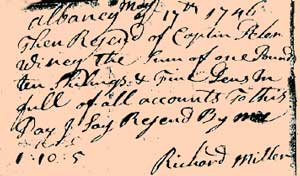

|
by Stefan Bielinski Richard Miller was sheriff of Albany County from 1749 to 1754. Miller's origins remain unknown. He was associated with the British army and seems to have been a trader based in New York City.  His business brought him to Albany and to the attention of William Johnson. His wife's name was Elizabeth. Their daughter was baptized at the Albany Dutch church in September 1736. In 1749, Miller was appointed sheriff of Albany city and county. He was recommended by Johnson with whom he had a business relationship. Richard Miller died intestate early in 1762. In March, Letters of Administration were issued to his widow and son-in-law. He was called "Lieutenant" and a member of "His Majesty's Independent Companies."
In September 1749, Johnson's highly letter to the governor called Lieutenant Miller a long time acquaintance who would "make as good a Sheriff as ever was in Albany." He also reminded the governor that Miller then was living in New York. Printed in JP 9:51-52. "Receipt Book belonging to Pieter Winne, 1733-1760," in the collection of the Albany Institute of History and Art. The excerpt shown is a receipt for one pound ten shillings and five pence signed by Richard Miller on May 17, 1746.first posted: 01/28/02 |